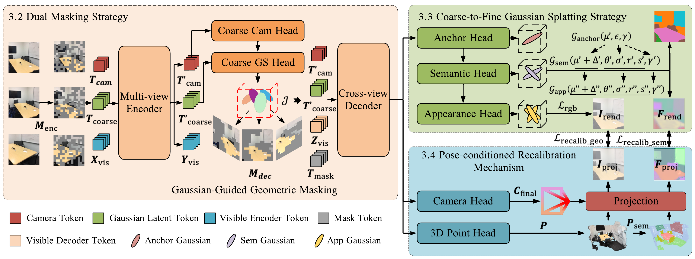
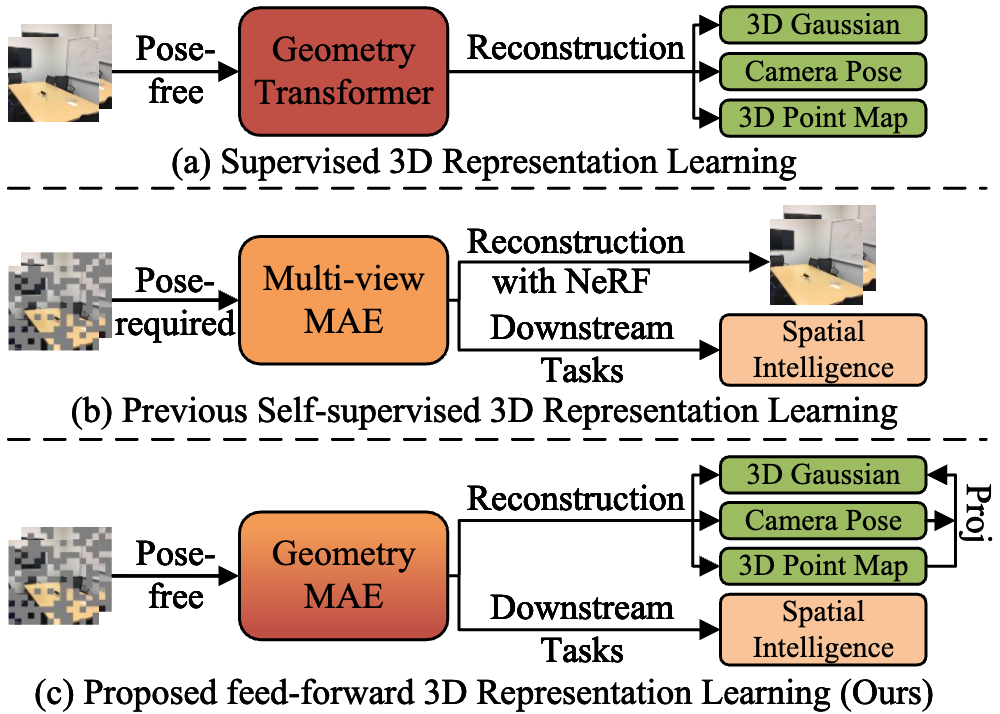
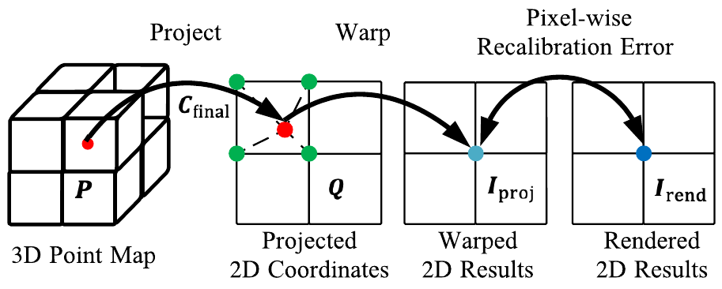
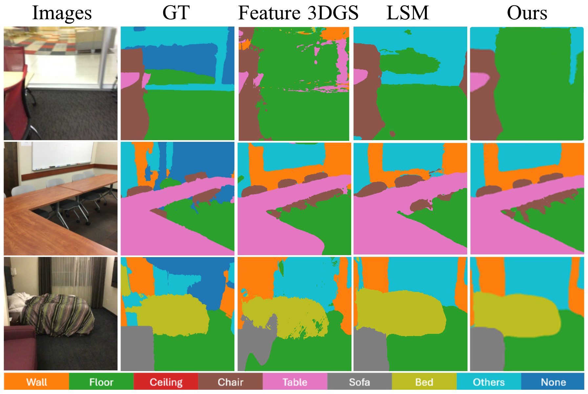
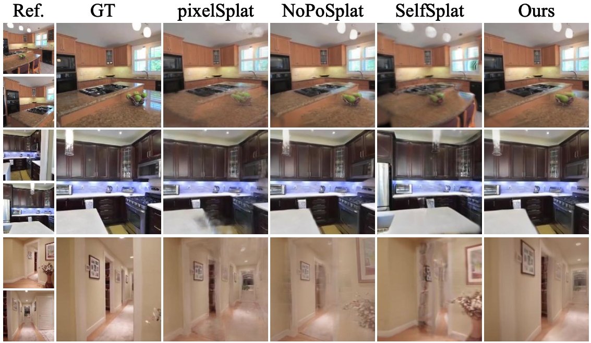
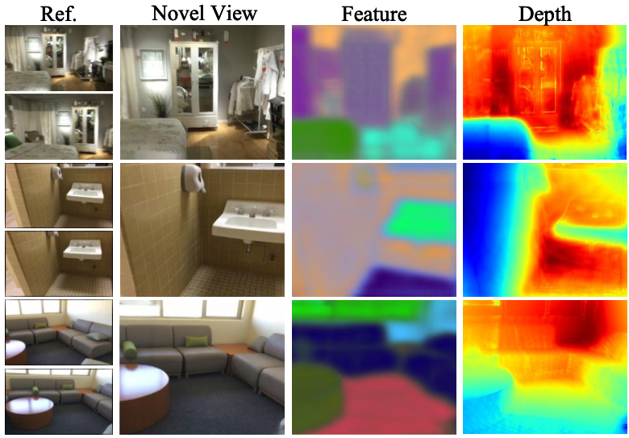

Dual-Masking Strategy
UniSplat masks tokens in both the encoder and decoder, and biases decoder masking toward geometry-rich regions. This forces the model to infer structure from incomplete visual evidence rather than memorizing local textures.
CVPR 2026
UniSplat is a feed-forward framework for learning unified 3D representations from unposed multi-view images. It strengthens geometry induction with dual masking, improves rendering fidelity with coarse-to-fine Gaussian splatting, and enforces geometry-semantic consistency through pose-conditioned recalibration.

Overview of UniSplat. The framework integrates dual masking, coarse-to-fine Gaussian splatting, and pose-conditioned recalibration in one feed-forward pipeline.
Robust 3D representation learning forms the perceptual foundation of spatial intelligence, enabling downstream tasks in scene understanding and embodied AI. However, learning such representations directly from unposed multi-view images remains challenging. Recent self-supervised methods attempt to unify geometry, appearance, and semantics in a feed-forward manner, but they often suffer from weak geometry induction, limited appearance detail, and inconsistencies between geometry and semantics.
We introduce UniSplat, a feed-forward framework designed to address these limitations through three complementary components: a dual-masking strategy for geometry-aware feature learning, a coarse-to-fine Gaussian splatting strategy for high-fidelity appearance and semantic rendering, and a pose-conditioned recalibration mechanism for geometric-semantic consistency. Together, these components yield unified 3D representations that are robust to unposed sparse-view inputs and transfer effectively across 3D vision and embodied AI tasks.
UniSplat masks tokens in both the encoder and decoder, and biases decoder masking toward geometry-rich regions. This forces the model to infer structure from incomplete visual evidence rather than memorizing local textures.
The decoder progressively refines the scene from anchor Gaussians to semantic and appearance Gaussians, improving texture fidelity while preserving semantic coherence.
Predicted camera poses are used to reproject 3D point and semantic maps back to the image plane, aligning geometry, appearance, and semantics in a shared spatial frame.

UniSplat unifies geometry, appearance, and semantics in a pose-free feed-forward setting, addressing the limitations of supervised reconstruction and prior self-supervised pipelines.

Pose-conditioned recalibration aligns projected 3D structures with rendered RGB and semantic predictions, enforcing cross-task consistency.
On ScanNet, UniSplat reaches a new pose-free state of the art for open-vocabulary 3D segmentation and novel view synthesis, achieving 0.5625 mIoU, 0.8334 accuracy, 25.65 PSNR, 0.8782 SSIM, and 0.1353 LPIPS on target views.
Beyond 3D scene understanding, the learned representation transfers strongly to embodied AI benchmarks including VC-1, RLBench, Meta-World, LIBERO, and Franka Kitchen, showing that UniSplat functions as a general-purpose visual backbone for spatial intelligence.

Novel-view open-vocabulary segmentation on ScanNet with stronger cross-view consistency and cleaner category boundaries.

Novel view synthesis on RealEstate10K with sharper appearance reconstruction under unposed sparse-view input.

Feature and depth visualizations indicate that UniSplat learns geometry-aware representations that remain useful beyond rendering.
@inproceedings{zhou2026unisplat,
title = {Learning 3D Representations for Spatial Intelligence from Unposed Multi-View Images},
author = {Bo Zhou and Qiuxia Lai and Zeren Sun and Xiangbo Shu and Yazhou Yao and Wenguan Wang},
booktitle = {Proceedings of the IEEE/CVF Conference on Computer Vision and Pattern Recognition (CVPR)},
year = {2026},
}